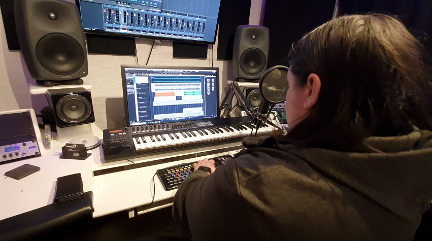

Sedan 2007 — egenskriven musik som berör
Varje sommar fyller musik Öjas utomhusscen — inte lånad, inte licensierad, utan egenkomponerad med hjärta och hängivenhet. Det är musik som berättar historier på skånska, som får barn att sjunga längs hem och vuxna att minnas. Sedan premiären 2007 är det vår musik, vår röst.
David Hansson satte standarden — melodier med kraft och känsla, 5–7 låtar per föreställning, sjungna på skånska från 2008. En epok som lade grunden för allt som kom efter.
Med nya låtskrivare kom en revolution: 15–18 låtar per föreställning. Musiken fick en ännu mer central roll i berättelsen och produktionernas hjärta.
Sedan 2025 skriver Frida Green ensam musiken — ett naturligt steg för en av Sommarteaterns mest älskade kreativa röster och en av Sveriges finaste låtskrivare.
Röstmemo-appen går varm hela året eftersom jag ibland kan komma på melodier när jag är på språng, och då måste jag spela in dem innan jag glömmer bort dem!
— Frida Green, låtskrivare
Sex sommrar i rad
För sjätte sommaren i rad skriver Frida Green musik till Sommarteaterns stora familjemusikal. Hon är inte bara kompositören bakom succéer som Kung Arthur, Törnrosa och Hans & Greta — hon är också en av Sommarteaterns mest älskade kreativa krafter.
— Dels för att det är så himla kul och utmanande, men också för att jag tycker att Sommarteatern gör ett fantastiskt jobb — både för unga och för kulturlivet. Det är något vi behöver värna om och ha kvar, säger Frida om varför hon återvänder sommar efter sommar.
— Jag brukar kolla igenom vilken typ av låtar som ska vara med, och oftast fastnar jag vid en direkt. Då väljer jag att börja med just den, för då sätter jag liksom stämningen för hur jag ska skriva just detta året.


Mannen bakom ljudet
Dick Örnå är producenten. Han tar låtarna Frida skriver och förvandlar dem till det du faktiskt hör — arrangerar instrumenten, spelar in, mixar och ser till att allt låter rätt när det väl spelas upp utomhus under en skånsk sommarkväll.
Han har jobbat med Sommarteatern sedan 2007. Det syns i musiken — utomhusljud är en utmaning de flesta aldrig tänker på, men det märks i att produktionerna låter rätt varje kväll.
Det är fortfarande musik som berör.
All vår musik finns på Spotify. Välj ett album och låt musiken ta dig tillbaka till Öjas utomhusscen.